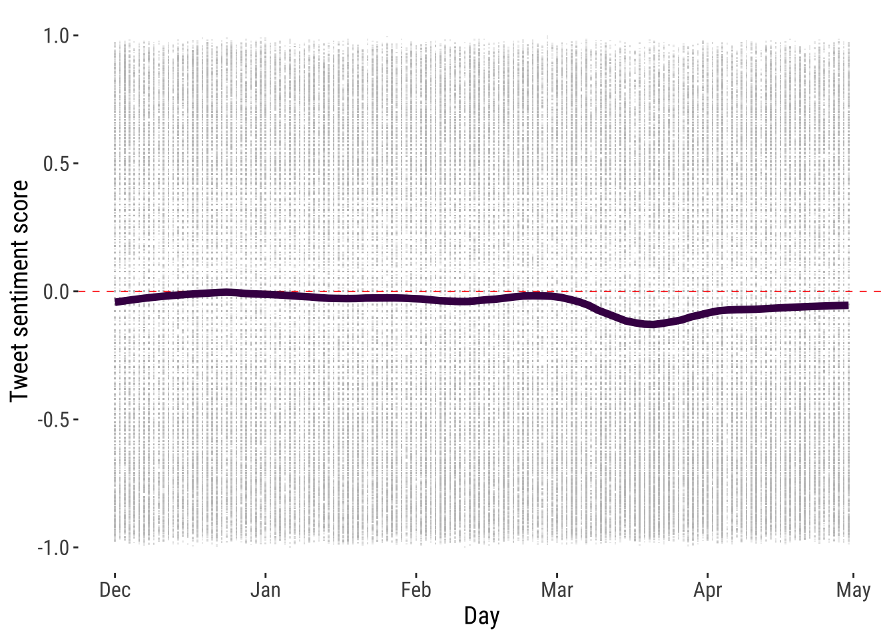

library(tidytext) # text data tidy approach
library(tm) # creating data corpus
library(SnowballC) # stemming text
library(tidyverse) # data manipulation
# sentiment analysis
library(vader)
# download twitter data (no used)
library(rtweet)
# design plots
library(patchwork)6 Sentiment Analysis
This chapter illustrates the use of sentiment analysis and social media data to measure and monitor public opinion sentiment about migration on Twitter. Sentiment analysis, also known as opinion mining or emotion artificial intelligence, refers to the use of natural language processing to systematically identify, measure and analyse emotional states and subjective information. It computationally identifies the polarity of text, that is, whether the underpinning semantics of an opinion is positive, negative or neutral. It allows deriving quantitative scores to identify the attitude or position on the distribution of negative or positive terms in a given piece of text.
This chapters focuses on migration sentiment. Immigration has consistently been identified as one of the most divisive social issues globally (European Commision 2019). Immigration sentiment shapes migration policy formulation and political outcomes. Anti-immigration sentiment has spurred attention towards more restrictive migration policies, and has been linked to an increasing prominence of right-wing affiliation, particularly in Western European countries and the United States (e.g. Bail et al. 2018). Immigration sentiment also influences the capacity of migrants to integrate into receiving communities. Acts of discrimination, intolerance and xenophobia can impair immigrants’ ability to secure employment, housing and achieve a sense of belonging in local communities, contributing to more polarised societies (Cheong et al. 2007).
Traditionally, data on public perception on attitudes towards immigration have been collected through qualitative sources, namely ethnographies, interviews and surveys. Yet, qualitative methods rely on small samples and normally suffer from sample bias (Rowe 2021). Similarly, while surveys can provide a reliable national representation, they are expensive, infrequent, offer low population coverage, lack statistically validity at fine geographical scales and become available with a lag of one or two years after they have been collected. Social media, particularly microblogging, has been identified as a key source of data to overcome these limitations. Social media offers a dynamic and open space which provides a unique window to better understand public opinion about immigration. As stated previously, this chapter aims to illustrate how Twitter data and sentiment analysis can be used to measure sentiment about migration.
The chapter is based on the following references:
R for Data Science: Working with strings (Chapter 14).
Text Mining with R: The tidy text format.
Hutto and Gilbert (2014) on a widely used sentiment analysis algorithm for Twitter data.
Rowe, Mahony, Graells-Garrido, et al. (2021), Rowe, Mahony, Sievers, et al. (2021) illustrate the use of Twitter data and sentiment analysis to monitor migration sentiment during the COVID-19 pandemic.
6.1 Dependencies
6.2 Data
We will use a sample of Twitter data on public opinion about migration originated in the United States during December 1st 2019 and May 1st 2020. They data were collected by Rowe, Mahony, Graells-Garrido, et al. (2021) to analyse changes in public opinion related to migration during the early stages of the COVID-19 pandemic. During this period, a rising number of anti-immigration sentiment incidents were reported across the world (“Stop the Coronavirus Stigma Now” 2020). Acts and displays of intolerance, discrimination, racism, xenophobia and violent extremism emerged linking individuals of Asian descendent and appearance to COVID-19 Coates (2020). In the United States, President Donald Trump repeatedly used the terms “Chinese Virus,” “China Virus,” and “Fung Flu” in reference to COVID-19. Fear mongering and racial stereotyping spread on social media and rapidly spilled onto the streets (Cowper 2020). In the United Kingdom, the government reported a 21% increase in hate crime incidents against Asian communities between January and March, and Chinese businesses reported a notorious reduction in footfall during Chinese celebrations (Home Affairs Committee 2020).
Data were collected via an application programming interface (API) using random sampling strategy. A set of key search terms were defined, including words, Twitter accounts and hashtags to collect the data. These search terms were developed in collaboration with the United Nations’ International Organization for Migration. See Rowe, Mahony, Graells-Garrido, et al. (2021) for details on the search strategy. For this chapter, Twitter users’ handles have been anonymised.
tweets_df <- readRDS("./data/sentiment-analysis/usa_tweets_01122019_01052020.rds")
glimpse(tweets_df)Rows: 47,950
Columns: 4
$ id <dbl> 176661, 176662, 176663, 176664, 176665, 176666, 176667, 176…
$ created_at <dttm> 2020-03-30 23:02:04, 2020-03-30 23:02:18, 2020-03-30 23:03…
$ status_id <dbl> 1.244762e+18, 1.244762e+18, 1.244762e+18, 1.244763e+18, 1.2…
$ text <chr> "@anonymous @anonymous @anonymous @anonymous @anonymous @an…6.2.1 Text data structures
General data frame object has a specific structure: Each variable is a column Each observation is a row Each type of observational unit is a table
Different approaches to storing and manipulating text data exist:
String: Text can be stored as strings, i.e., character vectors, within R, and often text data is first read into memory in this form.
Corpus: These types of objects typically contain raw strings annotated with additional metadata and details.
Document-term matrix: This is a sparse matrix describing a collection (i.e., a corpus) of documents with one row for each document and one column for each term. The value in the matrix is typically word count.
Introduce TidyText with an example: We thus define the tidy text format as being a table with one-token-per-row. A token is a meaningful unit of text, such as a word, that we are interested in using for analysis, and tokenisation is the process of splitting text into tokens. This one-token-per-row structure is in contrast to the ways text is often stored in current analyses, perhaps as strings or in a document-term matrix. For tidy text mining, the token that is stored in each row is most often a single word, but can also be an n-gram, sentence, or paragraph. In the tidytext package, we provide functionality to tokenize by commonly used units of text like these and convert to a one-term-per-row format. Tidy data sets allow manipulation with a standard set of “tidy” tools,
# converting to a tidytext data representation
tidy_tweets_df <- tweets_df %>%
select(created_at, text) %>%
unnest_tokens("word", text)In numeric data analysis, we normally look at the distribution of variables to gain a first understanding of the data. In text analysis, we explore the distribution of words. Typically we analyse the top words.
# ranking words
tidy_tweets_df %>%
count(word) %>%
arrange(desc(n))# A tibble: 50,583 × 2
word n
<chr> <int>
1 anonymous 102087
2 the 47883
3 to 36734
4 http 29758
5 url_removed 28382
6 and 24126
7 of 23356
8 in 19748
9 a 18451
10 is 16069
# … with 50,573 more rows6.2.2 Basic text data principles
Working with text data is complex. There are various important concepts and procedures that we need to introduce to get you familiar with, before we can get you rolling with text data mining. In this section, we introduce key concepts using example to illustrate the main ideas and basic code.
Character encoding
Character encoding is the numeric representation of graphical characters that we use to represent human language. Character encoding, such as UTF-8, ASCII and -ISO-8859-1 enables characters to be stored, transmitted and transformed using digital computers. For example, we use the English alphabet and understand differences between lower, upper case letters, numerals and punctuation. Computers encode and understand these characters as binary numeric combinations. There is no unique system of character representation.
Various systems exist and vary according to the type of information, when it was stored and geographic context. Additionally, different character encoding representations are used with varying levels of popularity according to the operating system, language and software, and this level of popularity changes over time. Currently UTF-8 is one of the most popular character encoding systems used on the web according to Google.
Sometimes we may need to standardise text data before they can be combined based on different character encoding systems. Generally R recognises and read different character encoding representations. But, if you notice an error of invalid string or an unusual character, this may mean you are using a dataset based on a character encoding representation which has not been globally integrated in R. This tends to occur with characters in various languages and emojis.
There is not quick way to standardise two different encoding systems, to our knowledge. Two handy functions in R that would help you with this task is the iconv and encoding. Both functions require you to know the character encoding representation of the data.
Regular expressions
Regular expressions are patterns that occur in a group of strings. Often when you work with text data, you are likely to find unusual character expressions, particularly if you are working with data scrapped from a website. Strings such as tab and return are normally represented by \t and \r so you may want to remove these expressions. To deal with regular patterns, we can use the grep base R library. In our dataset, we do have various occurrences of the expression > which stands for > - see example below. Let’s assume we want to remove this expression from our tweet sample. We first could use grepl from the grep library to identify tweets containing this expression. The grepl function asks if the first expression before the comma is present in the data object after the comma, and returns Boolean result i.e. TRUE or FALSE.
Note
You can also use the function str_detect from the stringr package to identify regular patterns or expressions in text
grepl(">", tweets_df$text[1:50]) [1] FALSE FALSE FALSE FALSE FALSE FALSE FALSE FALSE FALSE FALSE FALSE FALSE
[13] FALSE FALSE FALSE FALSE FALSE FALSE FALSE FALSE FALSE FALSE FALSE FALSE
[25] FALSE FALSE FALSE FALSE FALSE FALSE FALSE FALSE FALSE FALSE FALSE FALSE
[37] FALSE FALSE FALSE FALSE FALSE FALSE FALSE FALSE FALSE FALSE FALSE FALSE
[49] FALSE FALSELet’s see one of those tweets:
tweets_df$text[30][1] "@anonymous @anonymous @anonymous @anonymous @anonymous @anonymous @anonymous @anonymous Exactly."We may now want to remove the regular expression >. We can do this by using gsub from the grep library. In gsub, you add the pattern you want to replace (i.e. >), followed by the expression you want to use to replace this pattern with (nothing), and the data object (the tweet:tweets_df$text[30]).
gsub(">", "", tweets_df$text[30])[1] "@anonymous @anonymous @anonymous @anonymous @anonymous @anonymous @anonymous @anonymous Exactly."grep functions can also be very helpful in identifying a word and prefix in a string of words. We recommend consulting the Cheat Sheet for basic regular expressions in R put together by Ian Kopacka, to get familiar with the various character expressions and functions.
Unit of analysis
A key component in text data mining is the unit of analysis. We could focus our analysis on single words, individual sentences, paragraphs, sections, chapters or a larger corpus of text. The concept of here is relevant. The process of splitting text into units is known as tokenisation. Tokens are the resulting units of analysis. In the context of text data mining, n-grams is a popular tokenisation concept. This refers to a sequence of words of length n. A unigram is one word (e.g. migration). A bigram is a sequence of two words (migration can). A trigram is a sequence of three words (migration can have) and so on. n-grams can be useful when you want to capture the meaning of a sequence of words; for example, identifying “The United Kingdom” in a sequence of words. In R, we can use tidytext to organise the data according to n-grams.
Note
Note that the size of the chunk of text that we use to add up unigram sentiment scores can have an effect on an analysis. A text the size of many paragraphs can often have positive and negative sentiment averaged out to about zero, while sentence-sized or paragraph-sized text often works better. Similarly, small sections of text may not contain enough words to accurately estimate sentiment, while sentiment in very large sections may be difficult to identify.
tweets_df[1:50,] %>%
select(created_at, text) %>%
unnest_tokens(ngram, text, token = "ngrams", n = 2)# A tibble: 1,369 × 2
created_at ngram
<dttm> <chr>
1 2020-03-30 23:02:04 anonymous anonymous
2 2020-03-30 23:02:04 anonymous anonymous
3 2020-03-30 23:02:04 anonymous anonymous
4 2020-03-30 23:02:04 anonymous anonymous
5 2020-03-30 23:02:04 anonymous anonymous
6 2020-03-30 23:02:04 anonymous anonymous
7 2020-03-30 23:02:04 anonymous no
8 2020-03-30 23:02:04 no one
9 2020-03-30 23:02:04 one is
10 2020-03-30 23:02:04 is above
# … with 1,359 more rows
Tip
Task
Try changing n to 4. What changes do you observe?
Text pre-processing
We also need to think about the words we want to include in our analysis. Normally we focus on a selection of words conveying a particular conceptual representation. Some words may not convey much meaning, enrich our analysis or may distort the meanings we want to capture. So carefully thinking of the words we want to include in our analysis is important. Below we go through key character concepts which are often considered in text data mining and natural language processing. These concepts imply the removal of certain characters such as stop words, punctuation and numbers. The need to remove these characters will vary on the aim of the study, context and algorithm used to analyse the data.
Stop words
Stop words are commonly used words in a language. They tend to comprise articles, prepositions, pronouns and conjunctions. Examples of stop words in English are “a”, “the”, “is” and “are”. Stop words are essential to communicate in every day language. Yet, in the text data mining and NLP, stop words are often removed as they are considered to carry limited useful information. Stop words differ across languages and different lists of words exist to remove stop words from analysis. We use the tidytext approach to remove stop words by running:
# remove stop words
data("stop_words") # call stop word list
tidy_tweets_df <- tidy_tweets_df %>%
anti_join(stop_words)Joining, by = "word"Let’s see what are the top words now:
tidy_tweets_df[1:10,] %>%
count(word) %>%
arrange(desc(n))# A tibble: 4 × 2
word n
<chr> <int>
1 anonymous 7
2 law 1
3 people 1
4 threatening 1We can see words, such as “t.co” and “https” which may not add much to our analysis and we may consider to remove them using grep functions. We will illustrate this below.
Punctuation
We may also want to remove punctuation. Again, while punctuation may be very important in written language to communicate and understand the meaning of text. Punctuation by itself does not convey helpful meaning in the context of text analysis as we often take the text out of sequential order. Punctuation removal is another reason to prefer tidytext as punctuation marks are removed automatically.
Numbers
We may want to remove numbers. Sometimes numbers, such as 9/11 or 2016 may provide very relevant meaning in the terrorist attacks in the US context or Brexit referendum in the UK. However, they generally do not add much meaning. We can use grep to remove numbers. The "\\b\\d+\\b" text tells R to remove all numeric digits. d stands for digits. The - sign tells grep to exclude these digits.
# remove numbers
tidy_tweets_df <- tidy_tweets_df[ -grep("\\b\\d+\\b",
tidy_tweets_df$word),]Word case
An additional element to consider is word case. Often all text is forced into lower case in quantitative text analysis as we do not want words starting with an upper case word such as “Migration” to be counted as a different word than “migration”. In this example, the difference between using lower or upper case words may not matter. Semantically, on other occasions (e.g. in a sentiment analysis context), this distinction may make all the difference. Consider “HAPPY” or “happy”. The former may emphasise that a person is much happier than in the latter case and we may want to capture the intensity of this emotion in our analysis. In such cases, we may be better off preserving the original text.
The unnest_tokens in the tidytext package automatically forces all words into lower case. To preserve upper case words, you will need to change the default options for to_lower to FALSE.
tweets_df[1:10,] %>%
select(created_at, text) %>%
unnest_tokens("word",
text,
to_lower = FALSE) # preserve upper case# A tibble: 243 × 2
created_at word
<dttm> <chr>
1 2020-03-30 23:02:04 anonymous
2 2020-03-30 23:02:04 anonymous
3 2020-03-30 23:02:04 anonymous
4 2020-03-30 23:02:04 anonymous
5 2020-03-30 23:02:04 anonymous
6 2020-03-30 23:02:04 anonymous
7 2020-03-30 23:02:04 anonymous
8 2020-03-30 23:02:04 No
9 2020-03-30 23:02:04 one
10 2020-03-30 23:02:04 is
# … with 233 more rowsWhite spaces
White spaces can also be concern. Often white spaces may also be considered as words. In tidytext language, white spaces can be removed using the gsub function identifying white spaces with s+.
gsub("\\s+",
"",
tidy_tweets_df$word[1:20]) [1] "anonymous" "anonymous" "anonymous" "anonymous" "anonymous"
[6] "anonymous" "anonymous" "law" "people" "threatening"
[11] "republican" "government" "president" "arrested" "http"
[16] "url_removed" "anonymous" "approve" "ice" "delivers" Stemming
A common step in text-preprocessing is stemming. Stemming is the processing of lowering inflection in words to their root forms. For example, the stem of the word “monitoring” is “monitor”. This step aids in the pre-processing of text, words, and documents for text normalisation. Stemming is common practice because we do not want the words, such as “monitoring” and “monitor” to convey different meanings to algorithms, as such topic modelling algorithms, that we use to extract latent themes from unstructured texts.
For stemming words, we can use the function wordStem from the SnowballC package.
tidy_tweets_df[1:20,] %>%
mutate_at("word",
funs(wordStem((.),
language="en")))Warning: `funs()` was deprecated in dplyr 0.8.0.
ℹ Please use a list of either functions or lambdas:
# Simple named list: list(mean = mean, median = median)
# Auto named with `tibble::lst()`: tibble::lst(mean, median)
# Using lambdas list(~ mean(., trim = .2), ~ median(., na.rm = TRUE))# A tibble: 20 × 2
created_at word
<dttm> <chr>
1 2020-03-30 23:02:04 anonym
2 2020-03-30 23:02:04 anonym
3 2020-03-30 23:02:04 anonym
4 2020-03-30 23:02:04 anonym
5 2020-03-30 23:02:04 anonym
6 2020-03-30 23:02:04 anonym
7 2020-03-30 23:02:04 anonym
8 2020-03-30 23:02:04 law
9 2020-03-30 23:02:04 peopl
10 2020-03-30 23:02:04 threaten
11 2020-03-30 23:02:04 republican
12 2020-03-30 23:02:04 govern
13 2020-03-30 23:02:04 presid
14 2020-03-30 23:02:04 arrest
15 2020-03-30 23:02:04 http
16 2020-03-30 23:02:04 url_remov
17 2020-03-30 23:02:18 anonym
18 2020-03-30 23:02:18 approv
19 2020-03-30 23:02:18 ice
20 2020-03-30 23:02:18 deliv Coding characters
Typically we also want to remove coding characters, including links to websites. Words such as “https”, “t.co” and “amp” are common in webscrapped or social media text. The strings “https” and “t.co” appear as the top two more frequent words in our data. Generally such words do not convey relevant meaning for the analysis so they are removed. To do this, we can use grep.
tidy_tweets_df[-grep("https|t.co|amp",
tidy_tweets_df$word),] %>%
count(word) %>%
arrange(desc(n))# A tibble: 47,991 × 2
word n
<chr> <int>
1 anonymous 102087
2 http 29758
3 url_removed 28382
4 immigration 9034
5 covid19 6115
6 coronavirus 5190
7 china 5149
8 people 4991
9 chinesevirus 4963
10 chinavirus 4951
# … with 47,981 more rowsWe could also use str_detect from the stringr package.
coding_words <- c("https|t.co|amp")
tidy_tweets_df <- tidy_tweets_df %>%
filter(!str_detect(word, coding_words))
tidy_tweets_df %>%
count(word) %>%
arrange(desc(n))# A tibble: 47,991 × 2
word n
<chr> <int>
1 anonymous 102087
2 http 29758
3 url_removed 28382
4 immigration 9034
5 covid19 6115
6 coronavirus 5190
7 china 5149
8 people 4991
9 chinesevirus 4963
10 chinavirus 4951
# … with 47,981 more rowsAnalysing word frequencies is often the first stop in text analysis. We can easily do this using ggplot. Let’s visualise the 20 most common words used on Twitter to express public opinions about migration-related topics.
tidy_tweets_df %>%
count(word) %>%
arrange(desc(n)) %>%
slice(1:20) %>%
ggplot( aes(x= reorder(word, n), y= n/1000, fill = n/1000)) +
geom_bar( position="stack",
stat = "identity"
) +
theme_tufte2() +
scale_fill_gradient(low = "white",
high = "darkblue") +
theme(axis.text.x = element_text(angle = 90,
hjust = 1)) +
ylab("Number of occurrences ('000)") +
xlab("") +
labs(fill = "Word occurrences") +
coord_flip()6.3 Sentiment Analysis
After pre-processing our text, we can focus on the key of this chapter; that is, measuring migration sentiment. We do this by using sentiment analysis, which as described in the introduction of this chapter, enables identifying, measuring and analysing emotional states and subjective information. It computationally infers the polarity of text, that is, whether the underpinning semantics of an opinion is positive, negative or neutral.A variety of methods and dictionaries for evaluating the opinion or emotion in text exists. We will explore four different lexicon-based approaches: AFFIN (REF), bing (REF), nrc (REF) and VADER.
6.3.1 Dictionary-based methods
AFFIN, bing and nrc are dictionary- or lexicon-based approaches. Sentiment lexicons include key words which are typically used to express emotions or feelings, and are assigned a numeric score for positive and negative sentiment. They may also contain scores for emotions, such as joy, anger and sadness. Sentiment lexicons can thus be used to measure the valence of a given text by searching for words that describe affect or opinion. Dictionaries can be created by examining text-based evaluations of products in online forums to ratings systems from a variety of sources. They can also be created via systematic observations about different emotions in the field of psychology or related fields.
The package tidytext provides access to all three lexicons. The nrc lexicon classifies words in a binary way into categories of positive, negative, anger, anticipation, disgust, fear, joy, sadness, surprise and trust. nrc constructed via Amazon Mechanical Turk (i.e. people manually labelling the emotional valence of words). The bing lexicon classifies words in a binary classification of positive and negative, and is based on words identified on online forums. The AFINN lexicon assigns words with a score ranging between -5 and 5 to capture the intensity of negative and positive sentiment.AFINN includes a list of sentiment-laden words used during discussions about climate change on Twitter.
Note
Note that not all words are in the lexicons and they only contain words in the English language.
In R, we can browse the content of each lexicon using the get_sentiment function from tidytext.
Note
Note that you may need to authorise the download of the lexicons on your console
get_sentiments("nrc")# A tibble: 13,872 × 2
word sentiment
<chr> <chr>
1 abacus trust
2 abandon fear
3 abandon negative
4 abandon sadness
5 abandoned anger
6 abandoned fear
7 abandoned negative
8 abandoned sadness
9 abandonment anger
10 abandonment fear
# … with 13,862 more rowsget_sentiments("bing")# A tibble: 6,786 × 2
word sentiment
<chr> <chr>
1 2-faces negative
2 abnormal negative
3 abolish negative
4 abominable negative
5 abominably negative
6 abominate negative
7 abomination negative
8 abort negative
9 aborted negative
10 aborts negative
# … with 6,776 more rowsget_sentiments("afinn") # A tibble: 2,477 × 2
word value
<chr> <dbl>
1 abandon -2
2 abandoned -2
3 abandons -2
4 abducted -2
5 abduction -2
6 abductions -2
7 abhor -3
8 abhorred -3
9 abhorrent -3
10 abhors -3
# … with 2,467 more rowsWe can easily employ sentiment lexicons using the get_sentiment function from tidytext. Let’s first create a date variable to analyse fluctuations in sentiment by day and compute sentiment scores.
tidy_tweets_df <- tidy_tweets_df %>%
mutate(
date = as.Date(substr(as.character(created_at),
1,
10))
)nrc_scores <- tidy_tweets_df %>%
inner_join(get_sentiments("nrc") %>%
filter(sentiment %in% c("positive",
"negative"))
) %>%
mutate(method = "nrc")Joining, by = "word"nrc_scores %>% head()# A tibble: 6 × 5
created_at word date sentiment method
<dttm> <chr> <date> <chr> <chr>
1 2020-03-30 23:02:04 anonymous 2020-03-30 negative nrc
2 2020-03-30 23:02:04 anonymous 2020-03-30 negative nrc
3 2020-03-30 23:02:04 anonymous 2020-03-30 negative nrc
4 2020-03-30 23:02:04 anonymous 2020-03-30 negative nrc
5 2020-03-30 23:02:04 anonymous 2020-03-30 negative nrc
6 2020-03-30 23:02:04 anonymous 2020-03-30 negative nrc bing_scores <- tidy_tweets_df %>%
inner_join(get_sentiments("bing")) %>%
mutate(method = "bing")Joining, by = "word"bing_scores %>% head()# A tibble: 6 × 5
created_at word date sentiment method
<dttm> <chr> <date> <chr> <chr>
1 2020-03-30 23:02:04 threatening 2020-03-30 negative bing
2 2020-03-30 23:02:18 approve 2020-03-30 positive bing
3 2020-03-30 23:05:46 emergency 2020-03-30 negative bing
4 2020-03-30 23:08:48 idiots 2020-03-30 negative bing
5 2020-03-30 23:08:48 kill 2020-03-30 negative bing
6 2020-03-30 23:09:45 integral 2020-03-30 positive bing afinn_scores <- tidy_tweets_df %>%
inner_join(get_sentiments("afinn")) %>%
mutate(method = "afinn")Joining, by = "word"afinn_scores %>% head()# A tibble: 6 × 5
created_at word date value method
<dttm> <chr> <date> <dbl> <chr>
1 2020-03-30 23:02:04 threatening 2020-03-30 -2 afinn
2 2020-03-30 23:02:04 arrested 2020-03-30 -3 afinn
3 2020-03-30 23:03:04 aboard 2020-03-30 1 afinn
4 2020-03-30 23:05:46 join 2020-03-30 1 afinn
5 2020-03-30 23:05:46 emergency 2020-03-30 -2 afinn
6 2020-03-30 23:08:48 kill 2020-03-30 -3 afinn As you can see, the output of the various algorithm differs. nrc and bing provides sentiment scores classified into positive and negative. afinn returns a value from -5 to 5. An important feature of the three approaches explored so far is that they are based on unigrams; that is, single words. As a result, these methods do not take into account qualifiers before a word, such as in “no good” or “not true”. Additionally, these methods cannot appropriately handle negations, contractions, slang, emoticons, emojis, initialisms, acronyms, punctuation and word-shape (e.g., capitalization) as a signal of sentiment polarity and intensity (Hutto and Gilbert 2014) . Most commonly, lexicon-based approaches only capture differences in sentiment polarity (i.e., positive or negative) but do not identify differences in sentiment intensity (strongly positive vs. moderately positive) or contrasting statements. We note that accurate identification and scoring of sarcastic statements remain a key challenge in natural language processing.
We could subtracting positive and negative score to obtain an estimate of sentiment for each day based on three lexicon approaches. The resulting data frames could be binned and used to visualise how the predominant pattern of migration sentiment changes over time. We recalculate the sentiment scores by reusing the code above and adding lines for counting, pivoting, summing and subtracting.
nrc_scores <- tidy_tweets_df %>%
inner_join(get_sentiments("nrc") %>%
filter(sentiment %in% c("positive",
"negative"))
) %>%
count(date, sentiment) %>%
pivot_wider(names_from = sentiment,
values_from = n,
values_fill = 0) %>%
mutate(sentiment = positive - negative) %>%
mutate(method = "nrc") %>%
select(date, sentiment, method)Joining, by = "word"bing_scores <- tidy_tweets_df %>%
inner_join(get_sentiments("bing")) %>%
count(date, sentiment) %>%
pivot_wider(names_from = sentiment,
values_from = n,
values_fill = 0) %>%
mutate(sentiment = positive - negative) %>%
mutate(method = "bing") %>%
select(date, sentiment, method)Joining, by = "word"afinn_scores <- tidy_tweets_df %>%
inner_join(get_sentiments("afinn")) %>%
group_by(date) %>%
summarise(sentiment = sum(value)) %>%
mutate(method = "afinn")Joining, by = "word"Once we have daily sentiment scores, we bin them together and visualise them.
bind_rows(nrc_scores,
bing_scores,
afinn_scores) %>%
ggplot( aes(x = date, y = sentiment, fill = method)) +
geom_col(show.legend = FALSE) +
theme_tufte2() +
facet_wrap(~method, ncol = 1, scales = "free_y")All there lexicons display the same predominant pattern of increasing negative migration sentiment between March and April. They differ in the representation they provide during earlier months. While afinn and bing lexicons concur in suggesting that a negative sentiment was the prevalent pattern of sentiment towards migration during these months, nrc paints a different picture of a predominantly positive sentiment.
6.3.2 VADER
We move on to explore VADER. VADER is a lexicon and rule-based sentiment analysis tool which is tailored to the analysis of sentiments expressed in social media, and stands for Valence Aware Dictionary and sEntiment Reasoner (Hutto and Gilbert 2014). VADER has been shown to perform better than 11 typical state-of-practice sentiment algorithms at identifying the polarity expressed in tweets (Hutto and Gilbert 2014), and has remained one of the most widely used sentiment analysis methods for social media data (e.g. Elbagir and Yang 2020) ). See Ghani et al. (2019) and Rosa et al. (2019) for recent comprehensive reviews of social media analytics.
VADER overcomes limitations of existing approaches (Hutto and Gilbert 2014). It also captures differences in sentiment intensity, contrasting statements, and can handle complex sentences, including typical negations (e.g. “not good”), contractions (e.g. “wasn’t very good”), conventional use of punctuation to signal increased sentiment intensity (e.g. “Good!!!”), use of word-shape to signal emphasis (e.g. using ALL CAPS), using degree modifiers to alter sentiment intensity (e.g. intensity boosters (e.g. “very”) and intensity dampeners (e.g.”kind of”), sentiment-laden slang (e.g. ‘sux’), slang words as modifiers (e.g. ‘uber’ or ‘friggin’ or ‘kinda’), emoticons (:) and :D), translating utf-8 encoded emojis (💘, 💋 and 😁), initialisms and acronyms (e.g. ‘lol’). VADER can also handle entire sentences or ngrams, rather than only unigrams. See some examples below.
vader_df("wasn't very good") text word_scores compound pos neu neg but_count
1 wasn't very good {0, 0, -1.62282} -0.386 0 0.433 0.567 0vader_df("not good") text word_scores compound pos neu neg but_count
1 not good {0, -1.406} -0.341 0 0.294 0.706 0vader_df("good") text word_scores compound pos neu neg but_count
1 good {1.9} 0.44 1 0 0 0vader_df("Good!!!") text word_scores compound pos neu neg but_count
1 Good!!! {1.9} 0.583 1 0 0 0vader_df("VERY good!!!") text word_scores compound pos neu neg but_count
1 VERY good!!! {0, 2.926} 0.701 0.828 0.172 0 0vader_df("wasn't bad but very good") text word_scores compound pos neu neg
1 wasn't bad but very good {0, 0.925, 0, 0, 3.2895} 0.736 0.674 0.326 0
but_count
1 1The output is a vector with the following entries: * word_scores: a string that contains an ordered list with the matched scores for each of the words in the text. For the first example, you can see three scores i.e. a 0 score for “wasn’t” and “very” and a negative score for “good” reflecting the meaning of “good” in the text. * compound: the resulting valence compound of VADER for the entire text after applying modifiers and aggregation rules. * pos, neg, and neu: the parts of the compound for positive, negative, and neutral content. These take into account modifiers and are combined when calculating the compound score * but_count: an additional count of “but” since it can complicate the calculation of sentiment.
Let’s think about the results from the examples above, what is the piece of text with the most negative and positive sentiment score? Why? How do modifiers, amplifiers and negators influence the meaning of text?
Now we will use VADER to explore the sentiment towards migration during the wake of the COVID-19 pandemic. To reduce computational requirements, we will work with a sub-sample of our data to obtain sentiment scores at the tweet level. This is unlike our previous analysis which returned word-level scores. Obtaining sentiment scores via VADER may take some time. So do not panic, relax and wait. If this is taking too long, you can use the `tweet_vader_scores.rds` in the data folder for this chapter.
Note that for this example we will use the tweet text as VADER can handle various of the issues that would be a problem using the previous three approaches (as we have described above). Nonetheless, for your our work you may want to explore the influence of regular expressions.
# tweet level
tweet_vader_scores <- tweets_df %>%
select(text) %>%
vader_df(text)# combine vader scores,tweet ids and dates
tweets_scores_df <- cbind(tweets_df$id, tweets_df$created_at, tweet_vader_scores)
# rename vars and extract day var
tweets_scores_df <- tweets_scores_df %>%
rename(
id = "tweets_df$id",
created_at = "tweets_df$created_at"
) %>%
dplyr::mutate(
date = as.Date(substr(as.character(created_at),
1,
10))
)Concentration
We have done the hard work of computing sentiment scores. We can now start analysing the results. As any exploratory analysis, a first feature you may want to analyse if the overall distribution of sentiment scores. Applied to public opinion data, such analysis may give you an idea of how socially polarised is a discussion on social media. To this end, we can create a histogram.
p1 <- ggplot(data = tweets_scores_df) +
geom_histogram(aes(x = compound,
binwidth = 0.05),
fill = "#440154FF",
color="#440154FF") +
theme_tufte2() +
labs(x= "Tweet sentiment score",
y = "Density")
p2 <- ggplot(tweets_scores_df, aes(compound)) +
stat_ecdf(geom = "step",
size = 2,
colour = "#440154FF") +
theme_tufte2() +
labs(x= "Tweet sentiment score",
y = "Cumulative density")
p1 | p2We produce two plots exploring the frequency and cumulative distribution of migration sentiment scores. The results indicate that a concentration around zero and also at both extremes i.e. below -0.5 and over 0.5, suggesting that migration is very polarising social issue.
Temporal evolution
We can also explore the temporal evolution of sentiment towards migration over time. The results indicate that migration sentiment remained slighly negative but stable during March to April 2020.
# plot sentiment scores by day
p3 <- ggplot(tweets_scores_df,
aes(x = date, y = compound)) +
geom_point(colour = "gray", alpha = 0.3, size = 1, shape=".") +
geom_hline(yintercept = 0, linetype = "dashed", color = "red", size = .3) +
geom_smooth(method = "loess", se = FALSE, size=2, span = 0.3, color="#440154FF") +
theme_tufte2() +
labs(x= "Day",
y = "Tweet sentiment score") +
scale_y_continuous(limits = c(-1, 1))
p3Warning: Removed 1 rows containing non-finite values (`stat_smooth()`).Warning: Removed 1 rows containing missing values (`geom_point()`).
Composition
Analysing the coumpound conceals the composition of sentiment in tweets, particularly potential rises in strongly negative sentiment. We then analyse the composition of tweets classifying our sentiment score into “Strongly Negative”, “Negative”, “Neutral”, “Positive” and “Strongly Positive” as shown below. The results indicate that the composition remained largely stable over time with 50% of all tweets being negative, of which around 25% were strongly negative.In contrast, less than 20% of all tweets were strongly positive. These results suggest that anti-migration sentiment tends to use a stronger rethoric than pro-migration sentiment.
# sentiment categories
tweets_scores_df <- tweets_scores_df %>%
mutate(stance_group =
case_when(
compound >= -.05 & compound <= .05 ~ 3,
compound < -.5 ~ 1,
compound < -.05 & compound >= -.5 ~ 2,
compound > .05 & compound <= .5 ~ 4,
compound > .5 ~ 5,
)
)
# count in each sentiment category by day
composition_tab <- tweets_scores_df %>%
group_by(date) %>%
dplyr::count(date, stance_group) %>%
spread(stance_group, n)
# percentage in each sentiment category by day
composition_percent_tab <- cbind(composition_tab[,1], (composition_tab[,2:6] / rowSums(composition_tab[,2:6]) * 100)) %>%
.[, c(1, 3, 4, 2, 5, 6)] %>%
gather(stance, percent, -date)
# composition of sentiment score by day
p4 <- ggplot(composition_percent_tab ,
aes(fill = stance, y = percent, x = date)) +
geom_bar(position="stack", stat="identity") +
theme_tufte2() +
theme(legend.position = "bottom") +
scale_fill_manual(values = c("darkred","#d7191c", "#f7f7f7", "#2c7bb6", "darkblue"),
labels = c("Strongly Negative", "Negative", "Neutral", "Positive", "Strongly Positive")) +
labs(x= "Day",
y = "Percent")
p4
Note
Natural language processing is a rapidly evolving field and various new sentiment analysis algorithms emerge over the last five years. They are often tailored to address specific tasks and their performance can vary widely across datasets. So before deciding on a particular algorithm, consult the literature on what has been previously used to identify standard approaches their limitations and strengths.
6.4 Questions
For the second assignment, we will focus on the United Kingdom as our geographical area of analysis. We will use a dataset of tweets about migration posted by users in the United Kingdom during February 24th 2021 to July 1st 2022. This period coincides with the start of the war in Ukraine and is expected to capture changes in migration sentiment. The dataset contains the following information:
tweet_id: unique tweet identifier
created_at: date tweet were posted
place_name: name of place linked to tweet
lat: latitude
long: longitude
text: text content of tweet
tweets_qdf <- readRDS("./data/sentiment-analysis/uk_tweets_24022021_01072022.rds")
glimpse(tweets_qdf)Rows: 34,490
Columns: 6
$ tweet_id <dbl> 1.364707e+18, 1.364694e+18, 1.364692e+18, 1.364684e+18, 1.3…
$ created_at <dttm> 2021-02-24 22:40:21, 2021-02-24 21:47:44, 2021-02-24 21:42…
$ place_name <chr> "Westhumble", "Rushden", "Birmingham", "Cardiff", "Alexandr…
$ lat <dbl> -0.3302450, -0.6038262, -1.8906405, -3.1797998, -4.5748715,…
$ long <dbl> 51.25447, 52.28951, 52.49397, 51.49700, 55.98702, 53.64739,…
$ text <chr> "@post_liberal Voting for Griffin was part of this working …Using VADER:
Obtain sentiment scores and create plots to visualise the overall distribution of sentiment scores;
Create plots to analyse the temporal evolution of sentiment over time.
Visualise the geographical patterns of sentiment scores - see the spatial autocorrelation section on Rowe (2022) to map sentiment scores using
ggplot.
Analyse and discuss: a) the extent of anti-immigration sentiment in the United Kingdom; b) how it has changes over time in intensity and composition; and, c) the degree of spatial concentration in anti-immigration sentiment in the country.